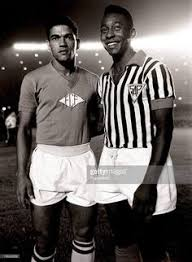

História do Futebol
O futebol é o esporte coletivo mais popular do planeta. Segundo dados da Federação Internacional de Futebol ( FIFA), cerca de 270 milhões de pessoas atuam em atividades diretamente relacionadas ao esporte (seja como jogador, seja como árbitro).
Futebol moderno surgiu na Inglaterra durante o século XIX, mas relatos históricos apontam que já existiam práticas esportivas parecidas. Atualmente, grandes competições de futebol são organizadas todos os anos por diferentes entidades futebolísticas (nacionais, continentais ou internacionais). E o esporte popularizado entre as massas de trabalhadores pobres é um segmento bilionário que movimenta muito dinheiro e move interesses políticos mundo afora.
Como vimos, o futebol moderno surgiu apenas no século XIX, mas sabe-se que milhares de anos atrás já eram praticados pela humanidade esportes com características semelhantes. O vestígio de prática similar ao futebol mais antigo do qual se tem conhecimento remonta à China de 3000 a.C. Mas os registros históricos não remetem apenas aos chineses. Existem evidências de esportes semelhantes ao futebol sendo praticado por japoneses, egípcios, além de gregos e romanos antigos. Também há registros em diferentes povos mesoamericanos (da região da Mesoamérica, atual México e América Central). Eduardo Galeano traz relatos de algo parecido com o futebol sendo praticado na Inglaterra durante a Idade Média. O jornalista uruguaio destaca que, no século XIV, o rei Eduardo II condenava essa prática esportiva. Outros reis ingleses como Eduardo III, Henrique IV e Henrique VI chegaram a proibir a prática do esporte.
Alguns séculos depois, ainda na Inglaterra, surgiria o futebol moderno. Isso ocorreu a partir da junção de clubes que não aceitavam determinadas regras da prática do rugby e decidiram unir-se para criar outro esporte, no qual não se conduzisse a bola com as mãos. As regras deste novo esporte, o futebol, foram estabelecidas em 1846 pela Universidade de Cambridge. As primeiras normas ainda estavam em um estágio extremamente embrionário e apresentavam algumas diferenças em relação ao futebol praticado atualmente. Galeano aponta que as regras estabelecidas inicialmente para o futebol “não limitavam o número de jogadores, nem a extensão do campo, nem a altura do arco, nem a duração das partidas”.
Naturalmente, uma série de mudanças foram sendo realizadas ao longo do século XIX, como a introdução do goleiro e do árbitro, a criação do pênalti para as faltas cometidas dentro da área, além da utilização das mãos para a cobrança do lateral. O crescimento do esporte e sua disseminação pela Europa levaram ao surgimento da Federação Internacional de Futebol (Fifa).
Uma importante observação é que a Fifa considera como data oficial do surgimento do futebol o ano de 1863, quando foi fundada na Inglaterra The Football Association, a organização responsável pela gestão do futebol naquele país.
O futebol foi introduzido no Brasil no final do século XIX, por Charles Miller. Esse estudante paulista retornou da Inglaterra em 1894 e trouxe na bagagem diversos artigos, como bolas, uniformes e um livro com as regras estabelecidas. Por conta disso, Charles Miller é atualmente considerado o pai do esporte no Brasil. Após a chegada ao país, o futebol rapidamente se popularizou na sociedade. Inicialmente, a adesão aconteceu de maneira elitizada, pois era restrito à aristocracia da sociedade brasileira. No entanto, com o crescimento urbano do país, o esporte popularizou-se entre as camadas populares, com a organização dos clubes de futebol.